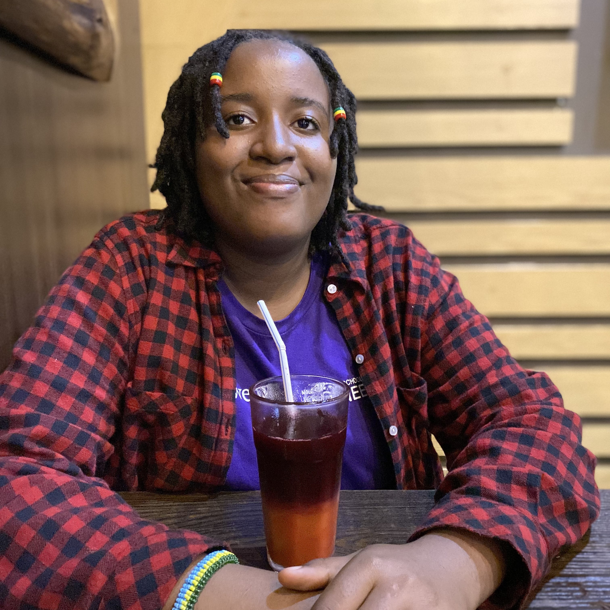

About Me

My name is Iphigenie Bera, I am Rwandan and use She/her/hers pronouns.
I worked at Meta(former Facebook) as data engineering intern and worked as a Research Assistant in a surface engineering lab at Northwestern University.
My study and work interests mainly are in the areas of machine learning, artificial intelligence,
general computer science, data engineering and software engineering.
I am a MOOC courses junkie, so I consume a couple of courses on Coursera, FreecodeCamp, Youtube and Udemy to supplement my college courses.
Before joining Computer Science program, I was in Mechanical Engineering program where during first college year I picked up engineering analysis skills
and felt in love with programming and decided to join Computer Science, the rest is history.
I am a data-first person. I first ensure data quality of data and identify insights from data.
I advocate for responsible data science practices by addressing bias associated with data processes.
From Healthcare, infrastructure planning, finance, media and all the way to digital intergration with physical systems,I am interested in design of data intensive systems, enforcing better data governance, agility and resourcefulness.
I love flowers and wouldn't be ashamed to take picture of flowers in public [ I might make a big dataset out of my flowers collection, who knows:) ].
I like to watch Korean dramas and listen to BTS, so I am casual Korean learner.